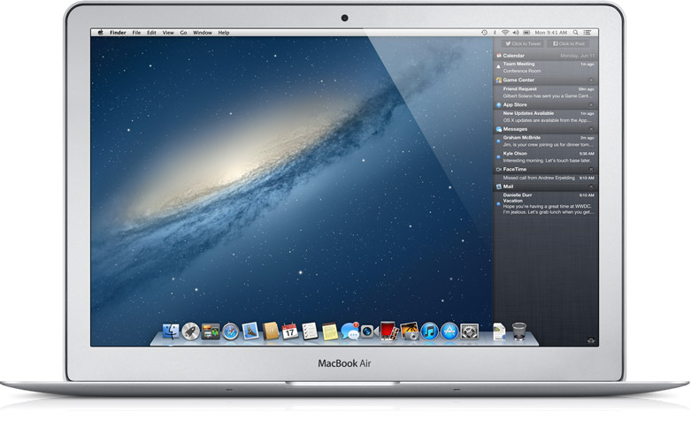

Ciência da Computação - DAW
O Mountain Lion da Apple
Porque a empresa que só mostrava produtos finais, resolveu soltar uma versão
beta de seu Mac OS X o Mountain Lion?

Para alguns analistas de mercado, a grande expectativa em torno do Windows 8 levou a Apple a tomar essa decisão.
Nos últimos anos, o grande sucesso das vendas de iPods, iPhones e iPads deu maior visibilidade aos Macs e MacBooks,
que também passaram a vender mais. Assim, o MAC OS passou a ser uma alternativa mais ponderável ao Windows.
Três aperfeiçoamentos se destacam. O primeiro é o centro de notificações (Notification Center), que reúne todas as informações e alertas de aplicativos como os de e-mails, calendários e mensagens.
Este centro traz para o desktop a experiência da Apple com o iPhone e o iPod. Outro recurso é o Game Center, também tomada de empréstimos dos dispositivos móveis.